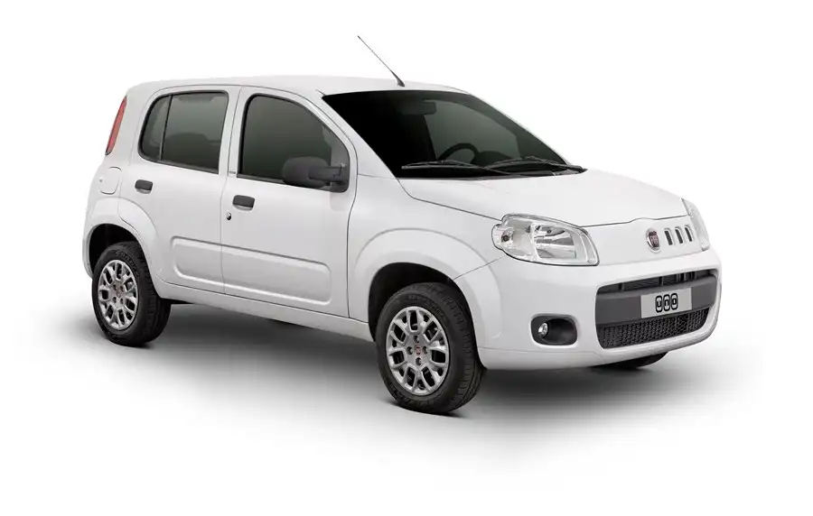

Fiat Uno

O Fiat Uno é um carro popular, econômico e ideal para o trânsito urbano.
Possui motor 1.0 flex, baixo consumo de combustível e manutenção acessível.
Preço médio da linha 2025: a partir de R$ 60.000.
Compacto e ágil, perfeito para uso diário na cidade.
Voltar